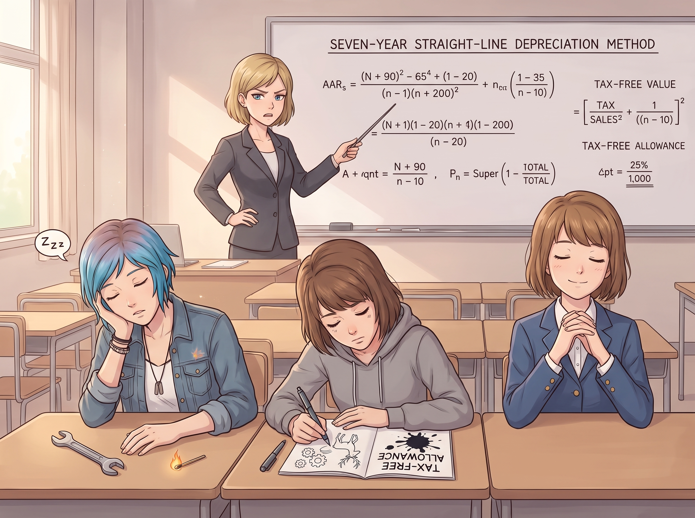

企業合規與稅務培訓

週二下午兩點，二號車廂會議區。
Kate 剛從西雅圖研討會返回不久，工坊就迎來了一場規格比國稅局審計還要嚴苛的「企業合規與稅務培訓」。
長木桌正前方架著一台高流明白板投影儀，Victoria 換上了一套剪裁極其凌厲的黑白千鳥格套裝，長髮挽成一絲不苟的低髮髻，手裡握著一支帶綠色激光指示點的高階簡報筆，金絲眼鏡後面的目光宛如即將清算不良資產的投資銀行家。
「鑑於本工坊即將進入第四季度，且承接了西雅圖基金會的實訓撥款與青年機械產品訂單，」Victoria 用指關節敲了敲白板，聲音清脆而冷峻，「今天我們必須完成非營利組織附屬實體稅務申報、俄勒岡州企業活動稅以及重型設備折舊與固定資產攤銷的基礎常識合規培訓。」
長木桌前，排排坐的三個人面前各放著一本厚達八十頁、由 Victoria 親手裝訂的彩色圖表講義。
一、降維催眠：三種頻率的集體靈魂出竅
培訓開始不到十五分鐘，Victoria 嘴裡吐出的一連串高深詞彙，瞬間化作了無差別的超強精神催眠波。
Chloe 起初還試圖轉動手裡的活動扳手保持清醒，但在 Victoria 講到「七年期資產直線折舊法」時，她的眼皮徹底灌了鉛。她用左手手肘撐著桌子，手掌托著下巴，嘴裡含著一根沒點燃的火柴，腦袋開始以三秒一次的頻率像打樁機一樣往下猛栽，甚至發出了一聲極度短促的輕微鼻鼾。
Max 努力想當個好學生，手裡的針管筆在筆記本上瘋狂記錄。然而當滿屏的資產負債表公式鋪開時，她的瞳孔逐漸失焦。原本記錄「進項稅抵扣」的頁面上，筆尖不知不覺畫出了一串歪歪扭扭的金色齒輪、一隻打哈欠的小鹿，最後筆尖直接在「免稅額度」四個字上扎出了一個深深的墨水黑洞。
剛舟車勞頓回來的 Kate 雖然坐得端端正正，雙手合十放在講義前，維持著聖母般的微笑，但長長的睫毛已經完全垂了下來，呼吸勻速輕柔，靈魂顯然已經神遊到了西雅圖的薰衣草田裡。
二、名媛暴怒：辦公室冷血判官的教鞭打擊
「……因此，在計算車床的殘值時，我們必須——」
Victoria 講到關鍵條款，一轉頭，看見長木桌前三個如同被集體施加了定身咒、腦袋東倒西歪的傢伙，額角的青筋狠狠跳動了兩下。
「啪——！！」
Victoria 手裡的硬質碳纖維激光筆狠狠抽在白板邊緣的金屬框上，發出了一聲清脆刺耳的爆響！
「Price 小姐！請你立刻站起來，用十秒鐘向我解釋：如果你上個月私自採購的那批鉻鋼棒沒有取得俄勒岡州轉售免稅證明，我們工坊將面臨百分之幾的懲罰性滯納金？！」
Chloe 被巨響嚇得猛地一仰頭，手肘一滑，下巴差點磕在桌沿上，火柴直接掉在地上，兩眼發直大喊：「四……四十個深蹲？！」
下一秒，一本厚達兩百頁的稅典摘要帶著破風聲，精準無誤地「啪」一聲拍在 Chloe 面前的桌板上。
Victoria 踩著高跟鞋，氣勢洶洶地走到三人面前：「Maxine Caulfield！把你的筆記本翻到第三頁——如果今年我們因為暗房化學顯影液採購發票抬頭錯誤被審計，妳打算用妳的照片去給稅務官抵稅嗎？！還有 Kate！不要以為用微笑就能合法避稅！」
三、殘酷懲罰：工坊史上最嚴格的抄寫地獄
面對徹底黑化的名媛女總裁，三人嚇得縮成一團，連大天使 Kate 都雙手捂著臉，心虛得不敢抬頭。
「既然你們的大腦拒絕接收現代商業文明的基礎邏輯，」Victoria 優雅地拉開椅子坐下，冷笑著宣布了懲罰：「今晚全員取消放空娛樂時段。Price，負責把過去三個月工坊所有採購收據按稅號重新手動輸入 Excel，錯一個小數點，明天就扣除妳皮卡的改裝油費！Caulfield，負責把暗房所有設備的折舊年限抄寫十遍！Kate，負責審核所有草本茶原料的免稅農產品產地認證，漏掉一張，明天由妳親自向基金會的財務總監做電話匯報！」
「不要啊 Victoria 總裁——！！」Chloe 發出了一聲慘絕人寰的哀嚎，抓著藍髮把臉埋進了那堆密密麻麻的報表裡。
四、深夜的報表修羅場與溫暖咖啡
晚上十點，二號車廂的小會議區燈火通明。鍵盤敲擊聲、算盤珠子撥動聲與鉛筆劃過紙張的沙沙聲交織在一起。
就在三人快要被數字逼瘋時，一杯杯散發著濃郁香氣的熱摩卡咖啡被輕輕推到了她們手邊。杯子邊緣貼著一張昂貴的便簽，上面是用優雅花體字寫著的批註：「扣除 15% 糖分（符合健康資產管理標準）。今晚十二點前完成前二十頁的，可以提前回閣樓睡覺。——V.C.」
三人抬頭，看見坐在不遠處辦公桌前的 Victoria 雖然依舊板著臉，但眼底卻帶著一絲不易察覺的柔和，手裡正默默替 Chloe 分擔著最後那疊最厚重的重型零件報表。
夜風穿過舊鐵道，車廂外的燈火在微涼的夜色中靜靜閃爍。在數字、發票與嚴厲的督促中，這間小小的工坊正被她們笨拙卻認真地經營成最堅固、最合規的溫暖堡壘。
隔天，Chloe 實在扛不住剩下的報表量，向 Miles 求救。Miles 找來 Warren 和 Brooke 遠程支援，用一套自動化掃描與數據清洗腳本，不到十分鐘就把原本要熬上好幾個通宵的報表整理得一清二楚，順道還讓 Victoria 難得地追加了一筆給機器人俱樂部的贊助補貼。這場報表危機，就在科技與友情的聯手救援下，圓滿落幕。